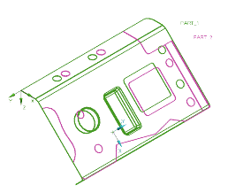
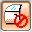
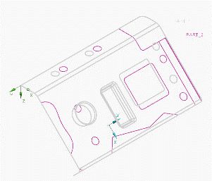
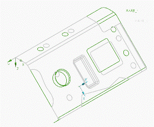
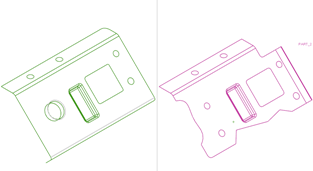

替换产品
当前，mnf14_Product.1(PART_1 — 如图绿色所示)作为已被冲压定向的产品。用 mnf14_Product.2(PART_2 — 如图品红色所示) 来替换此产品并更新工艺路线与操作。

要实现此您必须将 mnf14_Lineup.Product 设为工作部件；否则您将收到一条信息工作部件中不含要编辑的工艺路线。
-
在装配导航器中，右击 mnf14_Lineup.Product 并选择设为工作部件。
其它部件仍是打开与未抑制的。
-
右击 mnf14_Lineup.Product 并选择设为显示部件。
-
点击冲模工程工具条上的产品替换
 。
。 -
在产品替换对话框中，点击选择步骤下方的旧产品 。
旧产品选择步用于选择代表要替换的工艺路线中的产品。
注意到 PART_1将在视图中高亮显示。

-
点击选择步骤下方的新产品 。
新产品选择步用于选择您想要在工艺路线中替换旧产品的片体。
-
在图形窗口中选择片体 PART_2。

-
点击两次确定。
产品替换对话框将发生变化，让您查看并修改工艺路线中的所有工序。
图形窗口将切换为两个视窗。
